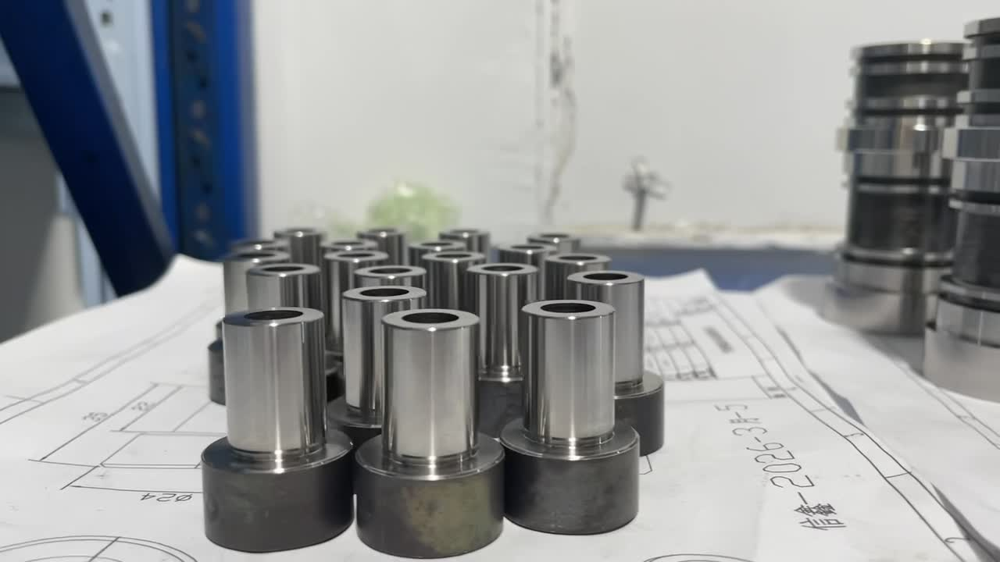

Precision CNC Machined Stainless Steel Parts — 304, 316, 17-4PH, 420, 440C — Prototype to Production
Get a Free QuoteSelecting the right stainless steel grade is critical for part performance. We machine all major austenitic, martensitic, and precipitation-hardened grades, each optimized for specific applications in corrosion resistance, hardness, and mechanical strength.
| Grade | Type | Hardness (HRC) | Corrosion Resistance | Key Applications |
|---|---|---|---|---|
| 304 / 304L | Austenitic | Up to 25 | Excellent | Food equipment, chemical tanks, architectural fittings |
| 316 / 316L | Austenitic | Up to 25 | Superior (marine-grade) | Medical implants, marine hardware, pharmaceutical equipment |
| 17-4PH | Precipitation Hardened | 28–47 | Good | Aerospace structural parts, high-strength valve components |
| 420 | Martensitic | 50–55 | Moderate | Surgical instruments, mold inserts, cutlery |
| 440C | Martensitic | 58–60 | Moderate | Bearings, valve seats, high-wear components |
Not sure which grade fits your application? Send us your requirements and our engineers will recommend the optimal stainless steel grade for your CNC machined parts.
From simple turned shafts to complex multi-axis milled housings, our stainless steel CNC machining services cover the full spectrum of precision part manufacturing.
3-axis, 4-axis, and 5-axis CNC milling for complex stainless steel components. Housings, brackets, manifolds, and structural parts with tight tolerances and smooth surface finishes.
Precision CNC turning on TSUGAMI Swiss-type lathes for shafts, fittings, connectors, and cylindrical stainless steel components. Live tooling enables milling operations in a single setup.
For hardened stainless steel grades (420, 440C, 17-4PH) that resist conventional cutting, our Charmilles EDM machines achieve intricate geometries and mirror-level surface finishes.
The right surface finish does more than improve aesthetics — it enhances corrosion resistance, reduces bacterial adhesion, and meets industry-specific compliance requirements for your CNC machined stainless steel parts.
A citric or nitric acid treatment that removes free iron from the surface and restores the protective chromium oxide layer. Essential for maximizing corrosion resistance on all CNC machined stainless steel parts.
An electrochemical process that removes 20-40 microns of surface material, eliminating micro-burrs and embedded contaminants. Produces an ultra-smooth, bright finish with superior corrosion resistance — the gold standard for medical and food-contact parts.
Mechanical polishing through progressively finer abrasives to achieve a mirror-like surface finish down to Ra 0.05μm. Used for optical components, decorative parts, and mold inserts where surface quality is paramount.
Stainless steel's unique combination of strength, corrosion resistance, and biocompatibility makes it essential across demanding industries. Our CNC machining stainless steel expertise spans these critical sectors.
CNC machined stainless steel parts for surgical instruments, orthopedic implants, diagnostic equipment housings, and dental tools. We machine 316L and 17-4PH to meet the stringent dimensional and surface finish requirements of the medical industry. Electropolished surfaces minimize bacterial adhesion and meet biocompatibility standards.
Conveyor components, mixing blades, filling nozzles, valve bodies, and custom fittings machined from 304 and 316 stainless steel. All parts meet food-contact surface requirements with passivated or electropolished finishes. Crevice-free designs prevent bacterial harboring in sanitary environments.
316 stainless steel components for marine hardware, offshore platform fittings, desalination systems, and underwater instrumentation housings. Superior resistance to saltwater corrosion and pitting makes 316 the preferred grade for any component exposed to chloride-rich environments.
Reactor vessel components, pump housings, mixing shafts, and custom manifolds machined from 316L stainless steel. Chemical resistance to acids, alkalis, and solvents ensures long service life in aggressive processing environments. Full material traceability and documentation provided.
Stainless steel is one of the most demanding materials in CNC machining. Understanding these challenges is what separates a quality stainless steel CNC machining service from a general-purpose machine shop. Here is why it requires specialized expertise:
Work Hardening: Austenitic grades (304, 316) harden rapidly during cutting. If the tool dwells or rubs instead of cutting cleanly, the surface becomes harder than the tool itself — causing premature tool failure and poor surface finish.
Accelerated Tool Wear: The abrasive nature of stainless steel combined with high cutting temperatures wears tooling 2-3x faster than carbon steel. We use premium carbide and ceramic inserts specifically rated for stainless steel machining.
Heat Management: Stainless steel has low thermal conductivity — heat concentrates at the cutting edge instead of dissipating into the workpiece. High-pressure coolant delivery and optimized cutting parameters are essential.
Chip Control: Long, stringy chips common in austenitic grades can wrap around the tool, damage the surface, or cause machine downtime. Proper chip-breaking geometry and feed rates are critical.
Dimensional Stability: Residual stresses from machining can cause stainless steel parts to warp after unclamping. Stress-relief strategies and balanced machining sequences prevent distortion in precision components.

We have invested in machines specifically capable of handling the demands of stainless steel CNC machining — rigid spindles, high-pressure coolant systems, and precision feedback loops that maintain accuracy even during long production runs on tough materials.
Swiss-made Charmilles sinker EDM and wire EDM machines handle hardened stainless steel grades that conventional cutting tools cannot efficiently process. For 17-4PH, 420, and 440C parts requiring complex internal geometries, sharp corners, or ultra-fine surface finishes, EDM delivers results that milling and turning cannot match.
Japanese-made TSUGAMI Swiss-type CNC lathes provide the rigidity and precision required for stainless steel turning. High-pressure through-spindle coolant delivery keeps cutting temperatures controlled, while live tooling enables complete parts in a single operation — reducing handling, improving concentricity, and cutting lead times.
We also offer full CNC, EDM, and injection molding services and metal 3D printing for integrated manufacturing solutions.
Challenge: A European food processing equipment manufacturer needed 200 custom valve bodies and mixing components in 316L stainless steel. Parts required electropolished surfaces (Ra < 0.4μm) to meet EU food-contact hygiene standards, with dimensional tolerances of ±0.02mm across all critical features.
Solution: We CNC milled the valve bodies from solid 316L bar stock using high-pressure coolant to manage heat and prevent work hardening. Internal channels were finished using our Charmilles sinker EDM for smooth, crevice-free flow paths. All parts were electropolished in-house and passivated per ASTM A967.
We machine all major stainless steel grades including 304, 316/316L, 17-4PH, 420, and 440C. Each grade is selected based on your application requirements for corrosion resistance, hardness, and mechanical properties. We also work with duplex stainless steels (2205, 2507) and specialty alloys on request.
We routinely hold tolerances of ±0.01mm on CNC machined stainless steel parts. For critical dimensions, we can achieve ±0.005mm with specialized fixturing and process controls. All parts are CMM-inspected with full dimensional reports available.
Stainless steel work-hardens rapidly during machining, meaning the material gets harder as it is cut. This causes accelerated tool wear, generates more heat, and requires slower cutting speeds, rigid setups, and specialized tooling. Austenitic grades (304, 316) are particularly prone to work hardening, while martensitic grades (420, 440C) present challenges due to their high hardness after heat treatment.
We offer passivation, electropolishing, mirror polishing (Ra 0.05μm), bead blasting, brushed finish, and PVD coating. Passivation is recommended for all stainless steel parts to maximize corrosion resistance. Electropolishing is preferred for medical and food-contact applications where ultra-smooth, hygienic surfaces are required.
Pricing depends on grade, complexity, tolerances, quantity, and finishing requirements. Stainless steel parts typically cost 20-40% more than carbon steel equivalents due to higher material costs and slower machining speeds. We provide free, detailed quotes within 24 hours — send your drawings for an accurate estimate.
Prototypes are typically delivered in 5-7 business days. Production batches range from 2-4 weeks depending on quantity and complexity. We maintain stock of common grades (304, 316) for faster turnaround and can expedite urgent orders when needed.
Yes. We regularly machine 316L for medical implants and surgical instruments, and 304/316 for food processing equipment. We provide material certificates (mill certs), comply with ASTM A967 for passivation, and can meet FDA and ISO 13485 documentation requirements for medical device components.
We serve medical devices, food processing, marine and offshore, chemical processing, pharmaceutical, aerospace, automotive, and oil and gas industries. Any application requiring corrosion-resistant, high-strength precision parts is within our capability.
Yes. We have TSUGAMI CNC lathes for precision turning of shafts, fittings, and cylindrical components, and multi-axis CNC milling centers for complex 3D geometries, housings, and structural parts. Both are optimized for stainless steel with high-pressure coolant systems and carbide tooling.
Passivation uses a citric or nitric acid bath to remove free iron and enhance the natural chromium oxide layer, improving corrosion resistance without changing the surface appearance. Electropolishing goes further — it electrochemically removes a thin surface layer (20-40μm), producing a smoother, brighter finish with even better corrosion resistance. Electropolishing is preferred for medical, pharmaceutical, and food-contact applications.
Send your drawings or 3D models. We will quote your stainless steel CNC machining project within 24 hours — material selection, machining, finishing, and inspection included. No minimum order quantity.
WhatsApp · WeChat · Global Shipping